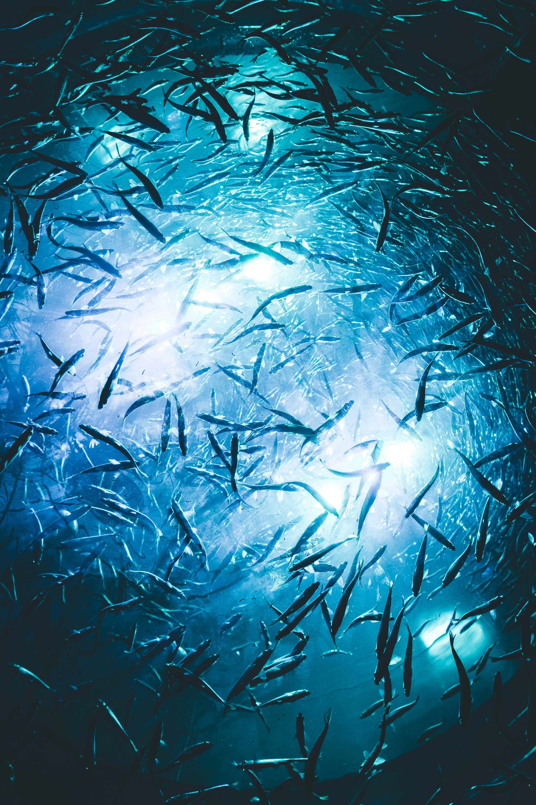
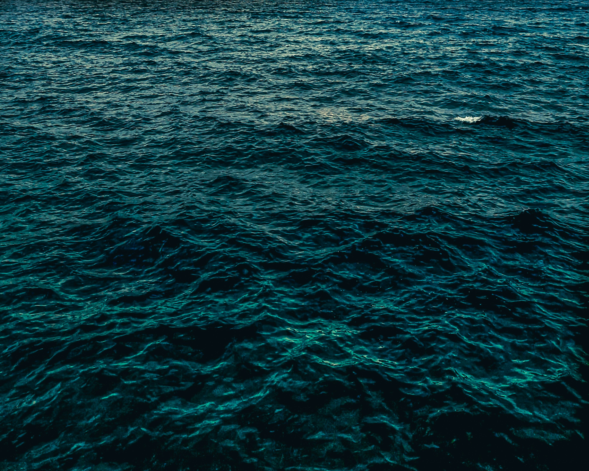
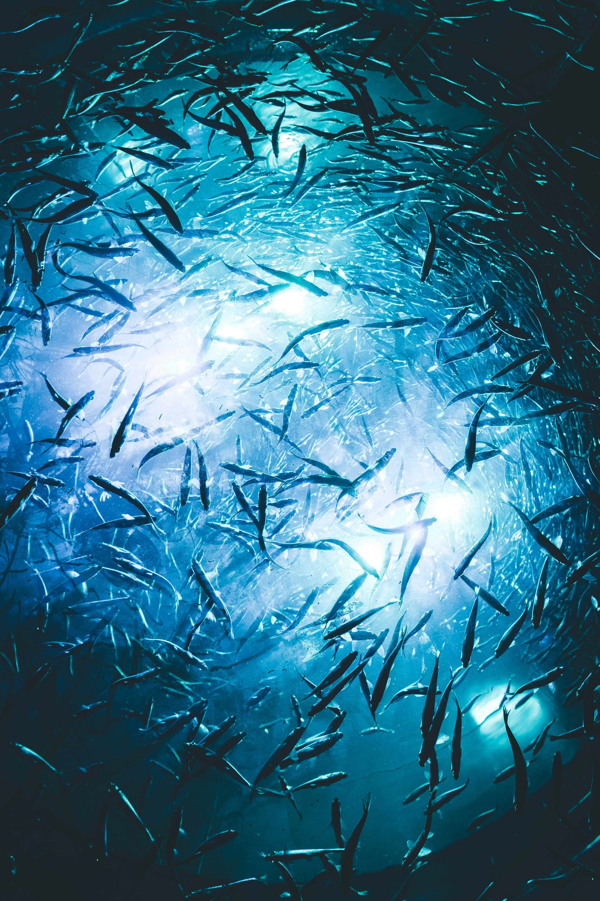
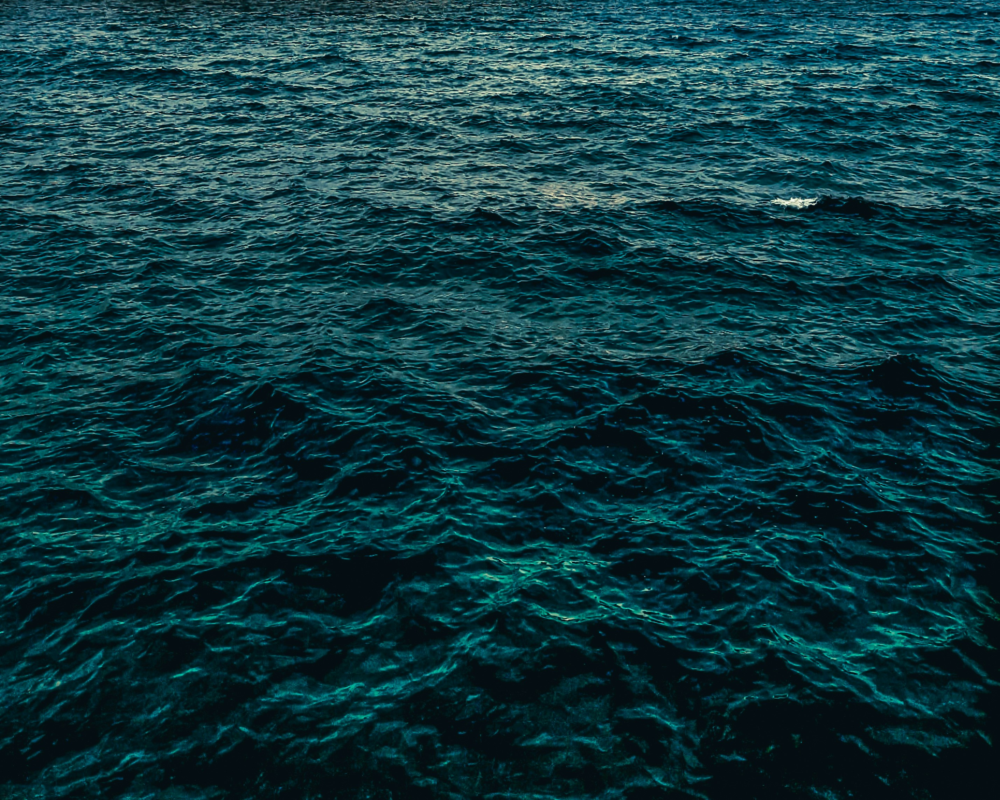

About Blue Horizon
Blue Horizon is an NGO dedicated to protecting oceans and marine life. We focus on reducing plastic pollution, educating communities, and promoting sustainable practices worldwide.

 



Our Mission
Our mission is to raise awareness about ocean conservation and inspire people to take action. We organize beach cleanups, educational workshops, and promote sustainable practices that protect marine life for future generations.
Why Oceans Matter
Global Research and Ocean Impact
According to the United Nations Environment Programme (UNEP, 2024), over 11 million tonnes of plastic waste enter the oceans every year — a number that could triple by 2040 if no major changes are made. The National Oceanic and Atmospheric Administration (NOAA, 2023) reports that more than 700 marine species are now affected by plastic pollution, including sea turtles, whales, and seabirds.
In coastal regions of South and Southeast Asia, rapid industrial growth and limited recycling systems contribute heavily to marine waste. In contrast, North America produces more single-use plastics per capita, but stronger waste management helps reduce direct dumping. This highlights that the challenge is both local and global — consumption habits, policies, and community awareness all play a role.
Why This Research Matters
Microplastics have now been detected in human blood and even in the placenta of newborn babies (Science Daily, 2023), showing that the ocean crisis is no longer distant — it’s within our own bodies. These findings remind us that protecting the ocean is protecting ourselves.
Our Mission for the Future
Blue Horizon supports education and community clean-up initiatives to reduce ocean pollution at the source. Our long-term goal is to promote biodegradable alternatives and pressure industries to adopt circular economy models. By raising awareness through research, campaigns, and student-led projects, we aim to restore balance to the planet’s most vital ecosystem.